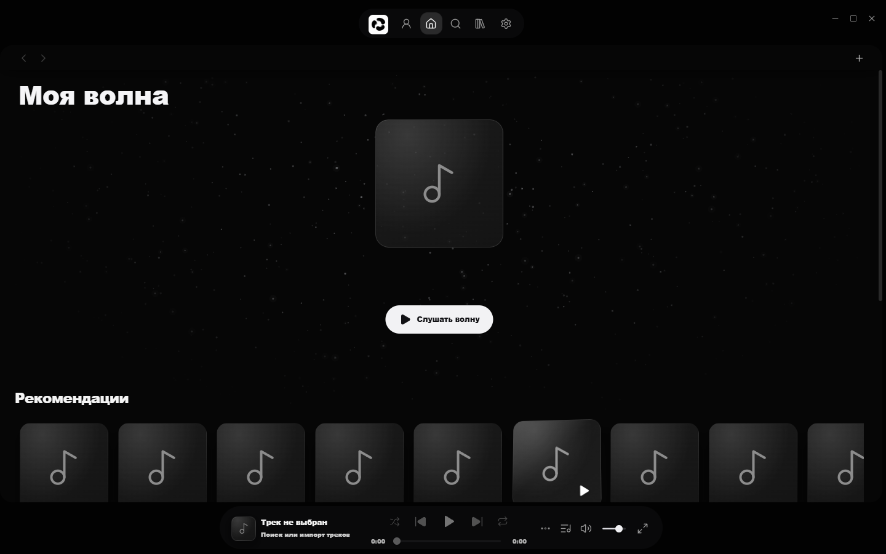

ParadoxMusic · Windows 10 / 11
Вся твоя музыка в одном плеере
Spotify, SoundCloud и YouTube в одном окне. Волна, которая знает, что ты любишь.

3сервиса в одном поиске: Spotify, SoundCloud, YouTube
∞вариантов дизайна: свои цвета, фон, шрифты и расположение плеера
0 ₽без подписок и рекламы
Включи волну
Бесконечный поток, собранный под тебя
«Моя волна» смотрит на лайки, дослушивания и пропуски. Чередует артистов, убирает дизлайки и не повторяет то, что звучало последние шесть часов.
Ищи где угодно
Один поиск. Spotify, SoundCloud и YouTube
Треки, артисты, альбомы и плейлисты в одной выдаче. Нашёл — нажал — играет.
Смотри на музыку
Плеер на весь экран с текстом песни
Большая обложка, синхронный текст песни и визуализация, которая двигается вместе со звуком.
Всё своё рядом
Медиатека, плейлисты и лайки в одном месте
Треки из Spotify, SoundCloud и YouTube в одной коллекции. Собирай плейлисты, сохраняй артистов и альбомы.
Сделай под себя
Тема, фон, шрифты и плеер — как тебе нравится
Редактор цветов, свой фон из фото, GIF или видео, прозрачность панелей, расположение плеера и меню. Сохраняй оформления и делись ими.
Каждое прослушивание
делает волну точнее
Что внутри
Всё для музыки. Бесплатно.
- 01Эквалайзер, кроссфейд и режим «Чистый звук»
- 02Синхронный текст песен в полноэкранном плеере
- 03Скробблинг в Last.fm и история с других устройств в волне
- 04Чарты и «Мой чарт» за 7 или 30 дней
- 05Импорт плейлистов из YouTube и SoundCloud по ссылке
- 06Мини-плеер «остров» поверх окон
- 07Свой фон приложения из фото, GIF или видео
- 08Интерфейс на русском и английском
Скачать ParadoxMusic
Поставь и включай
Windows 10 / 11 · x64
Windows
.exe Установщик для твоего пользователя, права администратора не нужны.
- 01
Скачай
Файл
ParadoxMusic-…-Setup.exe. - 02
Установи
Можно выбрать папку. Займёт меньше минуты.
- 03
Разреши запуск
Сборка пока без цифровой подписи. Если появится SmartScreen: «Подробнее» → «Выполнить в любом случае».
- 04
Включай
Найди трек в поиске или включи «Мою волну». Аккаунт не обязателен.
Вопросы
Коротко о главном
Это правда бесплатно?
Да. Без подписок и рекламы.
Какие сервисы поддерживаются?
Spotify, SoundCloud и YouTube в одном поиске и одной медиатеке.
Почему Windows предупреждает при запуске?
Сборка пока не подписана платным сертификатом, поэтому SmartScreen её не знает. Исходники открыты, сборку можно проверить.
Как обновляться?
Приложение само проверяет новые версии: «Настройки» → «Проверить обновления».
Нужен ли аккаунт?
Нет. Можно продолжить без аккаунта и сразу включить музыку. Аккаунт нужен для профиля и друзей.
Есть версия для Mac или телефона?
Сейчас только Windows 10 и 11, 64 бита.